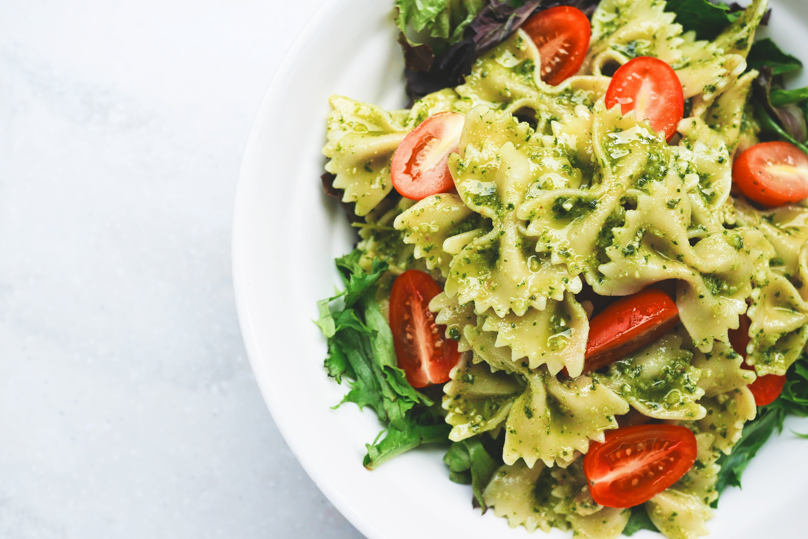

Farfalle al Pesto

A delicious Farfalle al Pesto dish
Farfalle al Pesto with cherry tomatoes and lettuce is a vibrant, refreshing twist on traditional Italian pasta cuisine that makes it an excellent option for hot summer days.
Ingredients
- 225g (8oz) Farfalle
- 1/2 cup basil pesto
- 1 cup cherry tomatoes
- 1 cup lettuce
- 1 tablespoon olive oil
- Salt and black pepper (to taste)
- Grated Parmesan cheese (optional, for serving)
Steps
- Boil water on a large pot and add salt. Cook the farfatelle according to package instructions until al dente. Drain, reserving 2 tablespoons of pasta water.
- Return the warm pasta to the pot. Add the pesto and the pasta water. Toss gently until the pasta is evenly coated.
- Let the pasta cool slightly, then fold in the halved cherry tomatoes and the crisp lettuce.
- Drizzle with olive oil, season with salt and pepper to taste, and finish with grated Parmesan cheese if desired. Ready to serve.
Home